Assigning Skills to Courses in CanDo¶
Skills appear in teacher gradebooks in two ways. They can be added to courses, causing them to automatically appear in the CanDo gradebook for every section of the course, or a teacher can create a “project” for a specific section that may contain any skill in the system. Adding project Skills will be described in the CanDo gradebook user documentation (written for teachers).
For administrative users, there are several methods of assigning skills to courses and sections.
Manual Assignment¶
You can add Skill Sets to Courses through the web. This is only practical if you do not have a very complex system with many Courses and Skill Sets.
Start by navigating (via School > Courses) to an individual course:
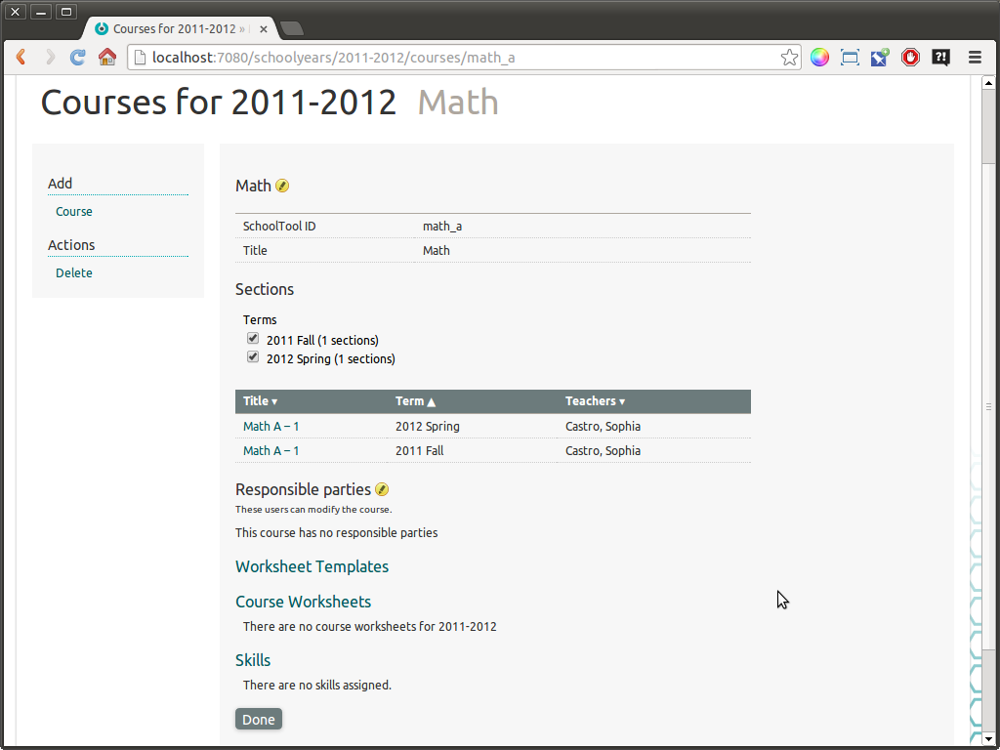
Click Skills:
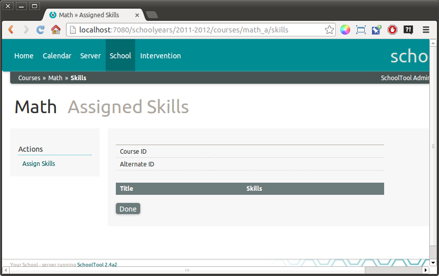
Click Assign Skills in the left sidebar:
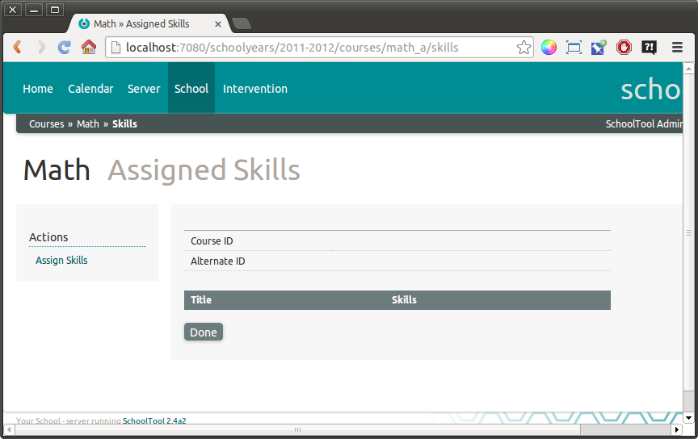
The search functionality in the Assign Skills view is currently buggy. It does not search Skills or Skill Sets, only higher layers in the hierarchy, in this case “Clusters.”
In this case, we would like to add the “Basic Mathematics” Skill Set from the “B2T Hands-On Math” Cluster. To do so, click the green + icon in the B2T Hands-On Math table. This gives you a pop-up form:
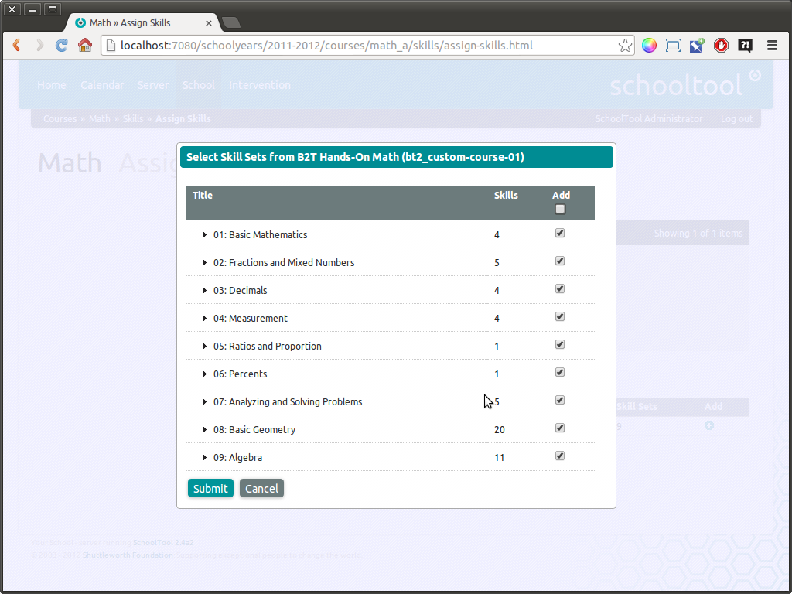
The check box under Add selects or deselects all the boxes. In this case, we only want the box next to Basic Mathematics checked:
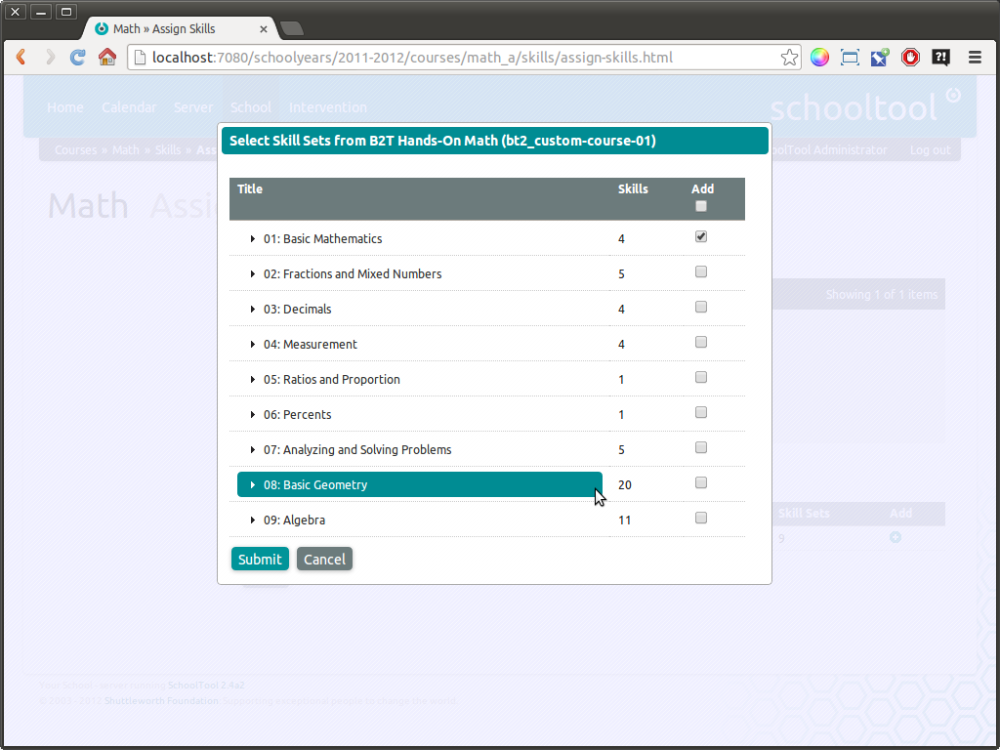
You can also expand the Skill Sets by clicking the > next to the Skill Set title. Optional skills have a blue background:
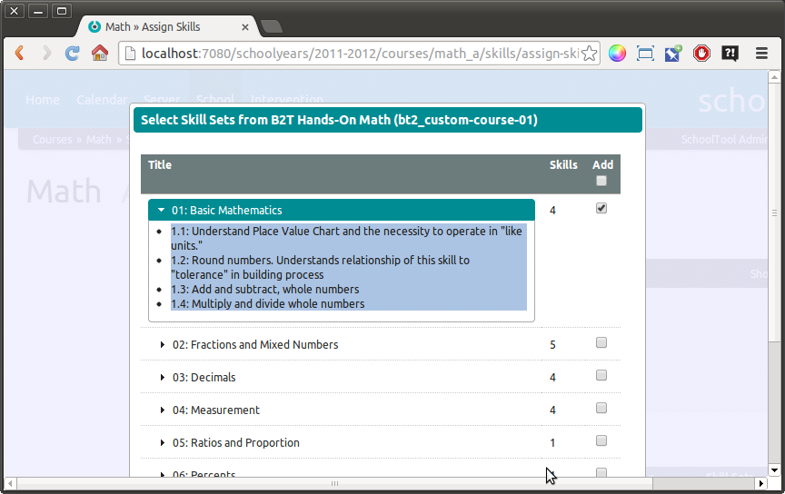
Click Submit:
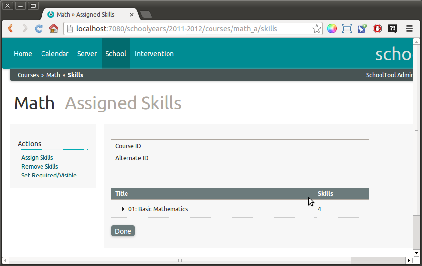
If you would like to hide specific skills in the set, that is, omit them from teacher’s gradebook view without changing the underlying Skills Document. You may also toggle their required status in this course, click Add: Set Required/Visible:
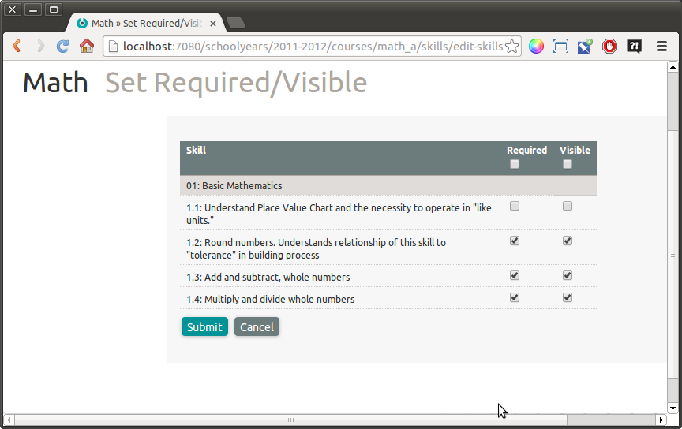
In the above case, skill 1.1 will not appear in the CanDo gradebook for this course, and 1.2, 1.3, and 1.4 will be considered as required only in this course.
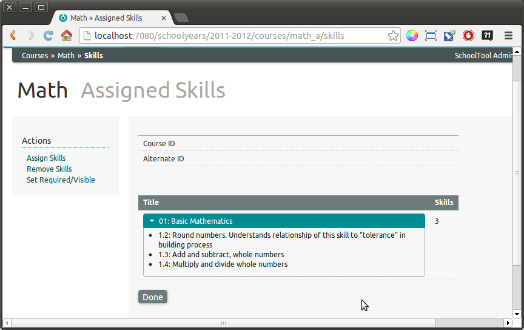
A teacher in this class will now see:
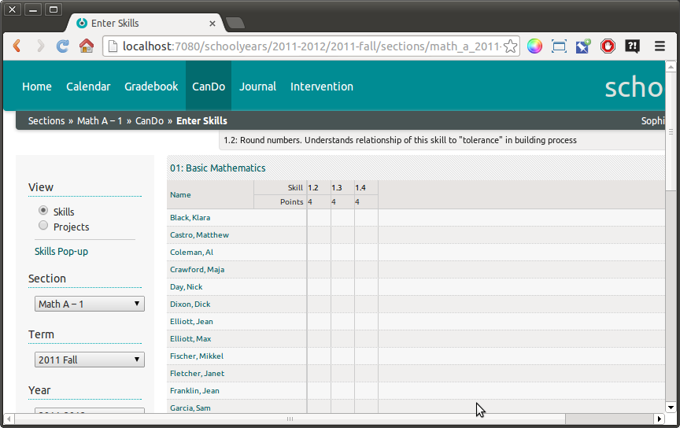
Import/Export Using Spreadsheets¶
Using SchoolTool’s skill spreadsheets, you can import and export skillset assignments to courses. This method is probably only practical if you have the correspondence Skill Sets and Courses already in a database.
To illustrate the format, we will run the Skills Export report from the Skills Documents page:
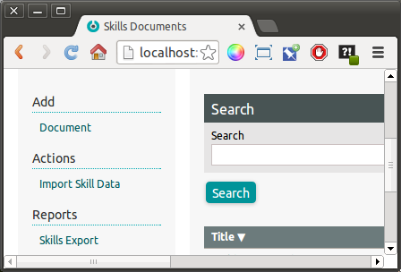
The resulting CourseSkills worksheet in the exported spreadsheet looks like this:
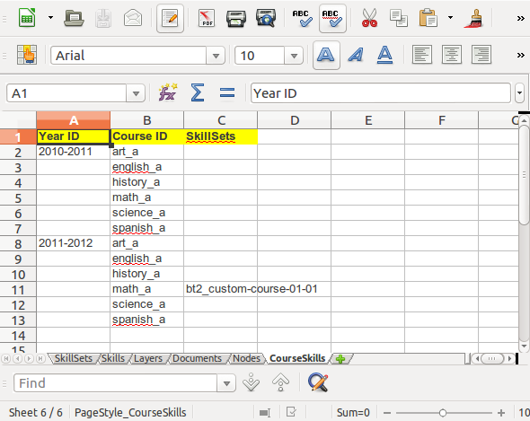
The first column is the Year ID. This calls attention to the fact that Courses, and their related skills are defined per year. This is important because these tend to be revised over the years, but you need a persistent record of their previous configuration.
This sheet allows an outline form where the Year ID does not have to be entered in every cell for easier readability. The value of a blank cell is equal to the last year defined above it.
Column B has Course ID’s. Each course gets one row.
Column C has a comma-separated list of the ID’s of Skill Sets to be applied to the course. This does not retain information about hidden skills or course-defined optional/required settings as described above.
Once you set up your data, you can import the worksheet (only this worksheet or with the rest) following the standard import instructions in Importing Skills.
Pattern Matching Assignment¶
Pattern matching assignment is preferable if you have a large body of standards that are applied in a predictable manner to specific courses. This method is a bit abstract and slightly magical, but it is successfully used to assign thousands of skills to hundreds of courses.
First we’ll make a Course in SchoolTool called “Building to Teach.” See Setting Up Courses if necessary:
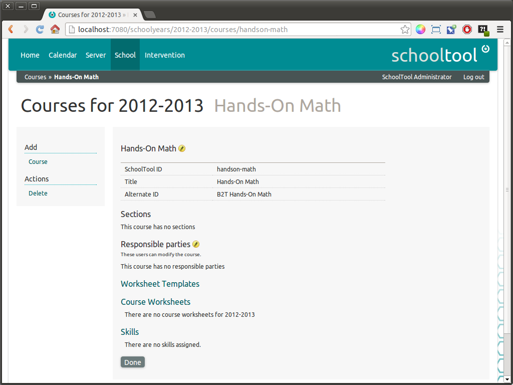
We want this to map to the correspondng Cluster created in CanDo:
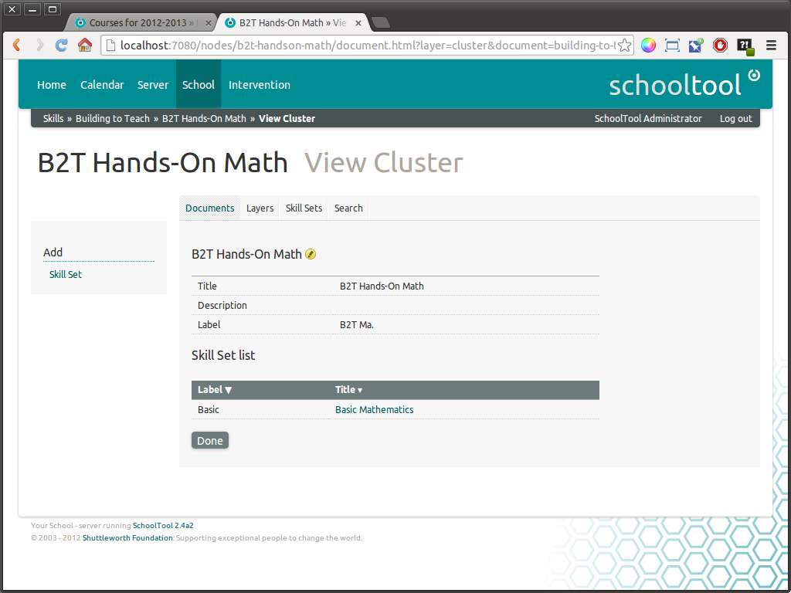
Your layers may have different names (other than “Cluster”); any layer can be associated with a SchoolTool Course.
Note that both the Alternate ID for the Building to Teach Course is “B2T Hands-On Math,” which matches the title of the skills Cluster.
Return to the SchoolTool Courses index (via the School tab), and you will see a Batch Assign Skills link:
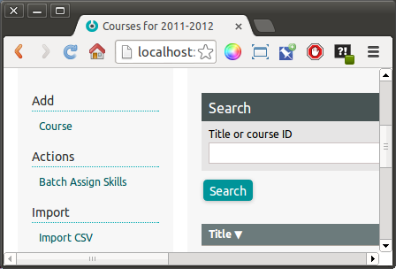
As mentioned above, we have set up the example so that the Course Alternate ID matches the title of our Cluster Title, so we select the following in the form:
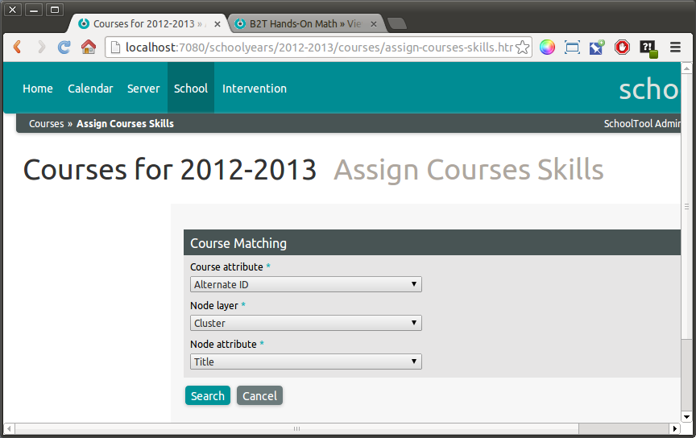
And click Search:
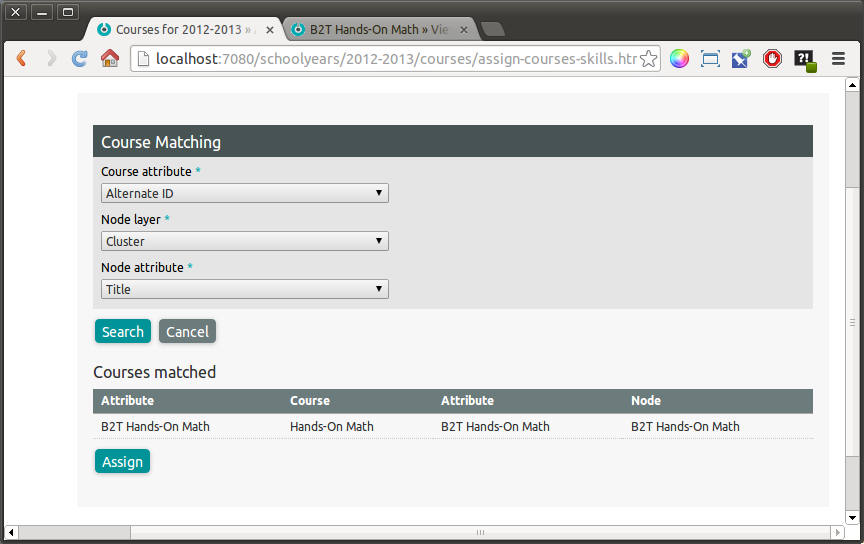
This looks through all the Courses in the school for matching “Course” nodes in the skills. Click Assign:
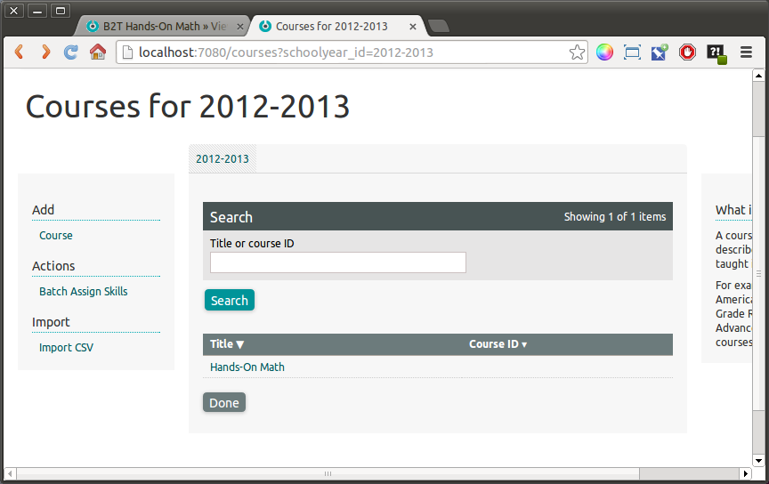
This returns us to the course index. If we click on the Hands-On Math link, and then Skills we will see the assigned skills:
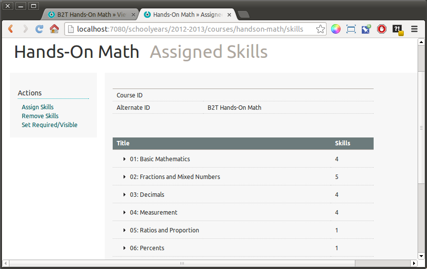